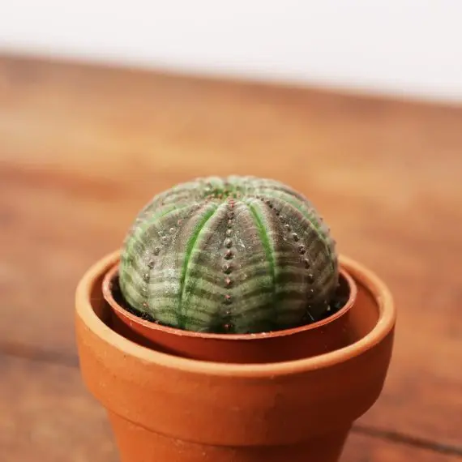

GRASSE E SUCCULENTE
Il gruppo di piante che compongono la categoria delle piante grasse comprende oltre 40 famiglie di piante e alcune, se non la maggior parte, delle piante di quelle famiglie sono piante grasse.
Le famiglie di piante contenenti molte specie succulente includono agavi, aloe, cactus, crassule, echeverie, euforbie, kalanchoe, mesembe, sedum e sempervivum. Un modo in cui gli esperti di piante cercano di chiarire
il problema è specificare che una pianta deve avere foglie o steli carnosi che immagazzinano temporaneamente acqua da utilizzare durante i periodi di siccità per qualificarsi come succulenta.

Questa definizione esclude organi di stoccaggio come radici, cormi, rizomi e bulbi. Queste caratteristiche immagazzinano cibo insieme all’acqua e aiutano la pianta a sopravvivere a condizioni difficili,
tra cui freddo o caldo eccessivo e mancanza di luce, piuttosto che esistere esclusivamente allo scopo di aiutare la pianta a sopravvivere a periodi di siccità.
Le succulente amano ambienti assolati e calorosi: l'esposizione migliore, infatti, per questo tipo di piante è quella sud ma tollerano bene anche quelle a sud-est e sud-ovest.
Oltre ad avere molta luce, è importante che le piante grasse siano inserite in un ambiente dove la temperatura non scende mai sotto i 5-7° C, perché un freddo eccessivo ne provocherebbe la morte,
in quanto queste piante sono di habitat naturale desertico.

L'aspetto fondamentale è assolutamente quello di permettere loro un periodo di riposo durante il quale andranno posizionate in un posto fresco ma comunque sempre molto luminoso.
La fioritura delle piante succulente avviene generalmente nel periodo primaverile-estivo. È sempre importante notare però che nel caso di piantine particolarmente giovani, possono occorrere a volte anche anni affinché avvenga la prima fioritura.
A seconda delle singole specie tra le quattro macro-famiglie botaniche di succulente esistono delle eccezioni nei periodi di fioritura,
ma si tratta di casi particolarmente rari.
La concimazione, particolarmente nel caso delle Cactacee, avviene durante la fase vegetativa. Essa è generalmente compresa tra aprile e settembre, periodo nel quale viene effettuata una concimazione mensile.